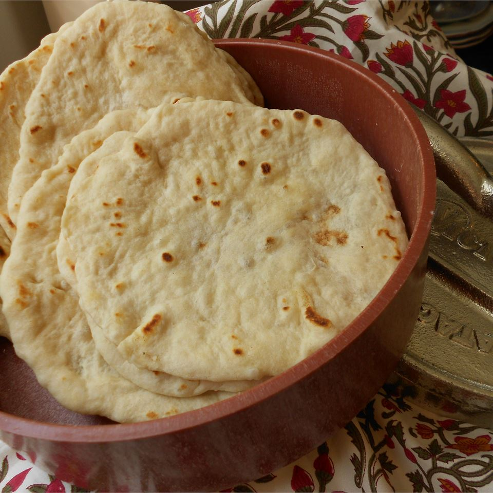

Grandma Pita's Homemade Tortillas

Ingredients
- 6 cups of flour
- 3 tablespoons of baking powder
- 1 tablespoon of salt
- 5 tablespoons of lard
- Anywhere between 1/4 cup and 1/2 cup of lukewarm water, not too hot, not too cold
Directions
- Start mixing all ingredients except the water together in a large bowl with your hands.
- Gradually pour in water while mixing.
- Knead the dough until it forms a ball and cleans the bowl.
- Turn flat iron or griddle on to medium heat.
- Start breaking the dough apart into small, flat discs, about the size of your palm.
- Place your tortillas on your griddle, and flip when they bubble up.
- Repeat until out of dough, and you should have about a dozen fresh, delicious tortillas!
View a similar recipe online
Contact Me
Send me an email!
University of Montana
32 Campus Drive
Missoula, MT 59812